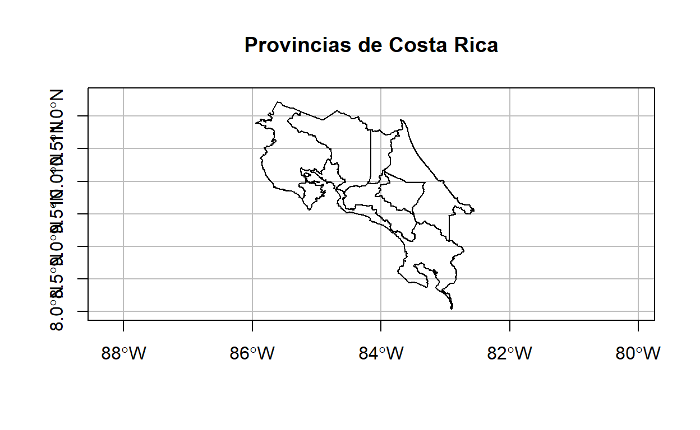
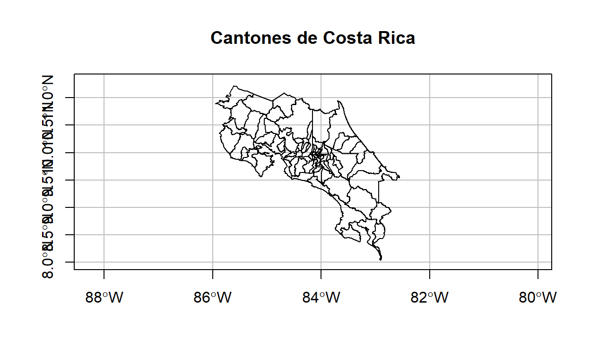
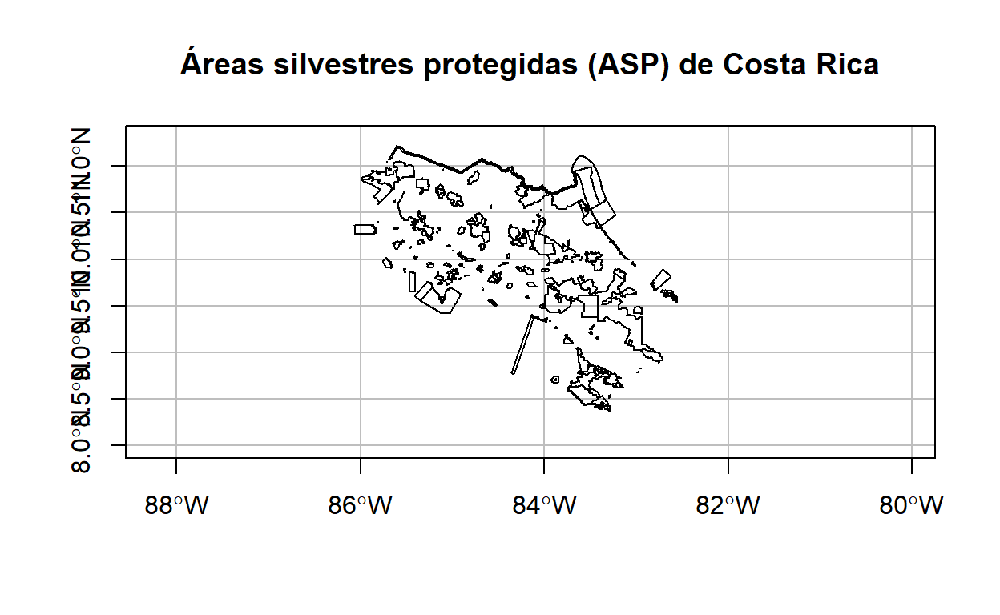
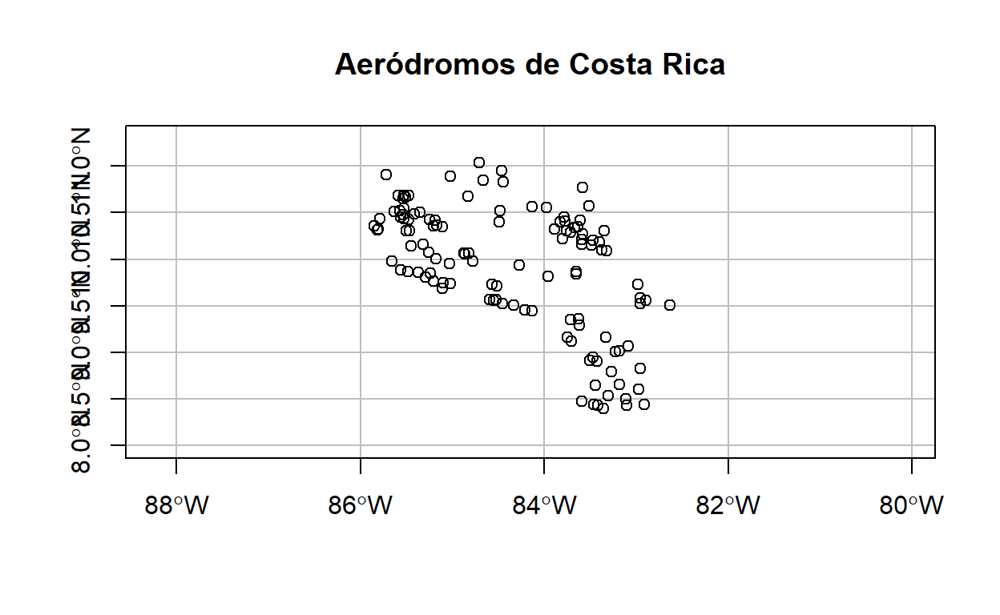
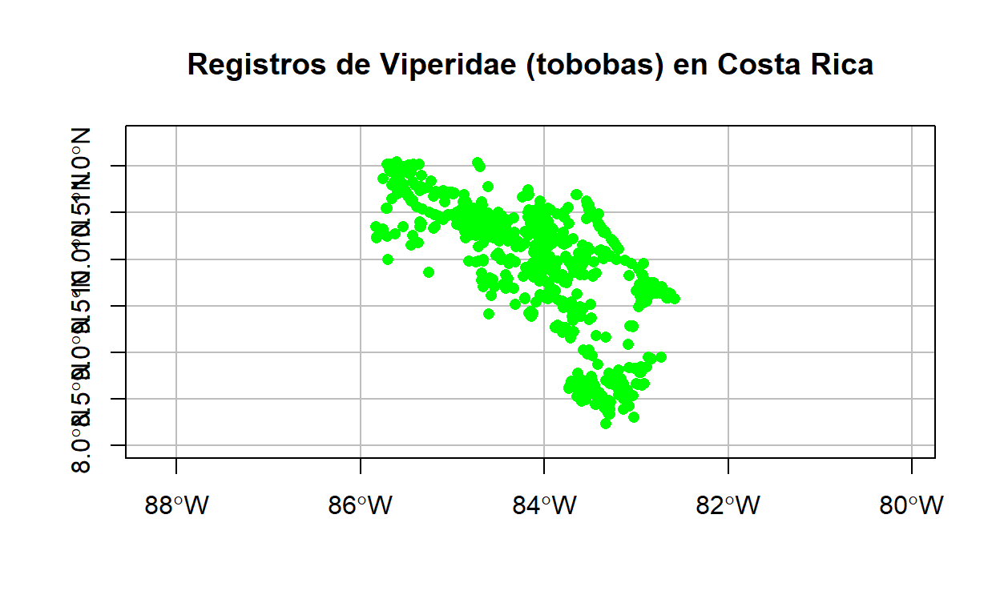
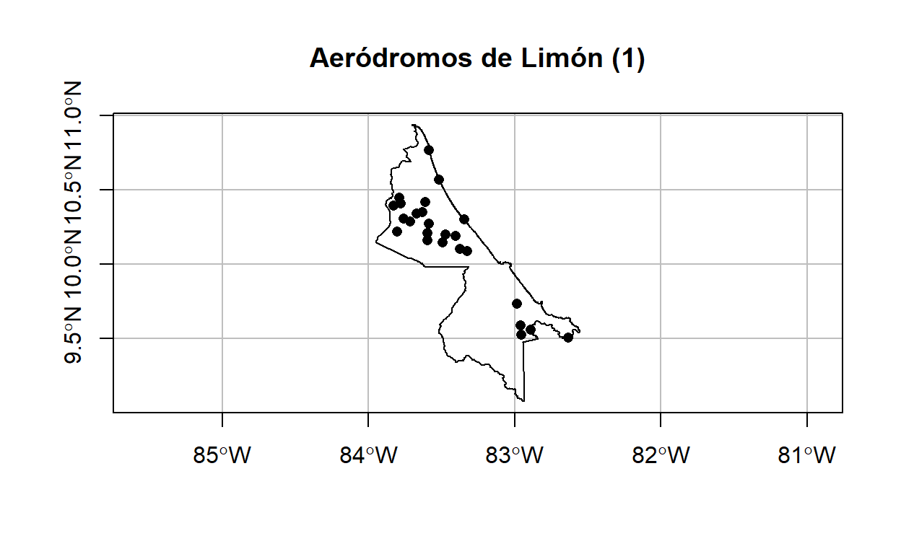
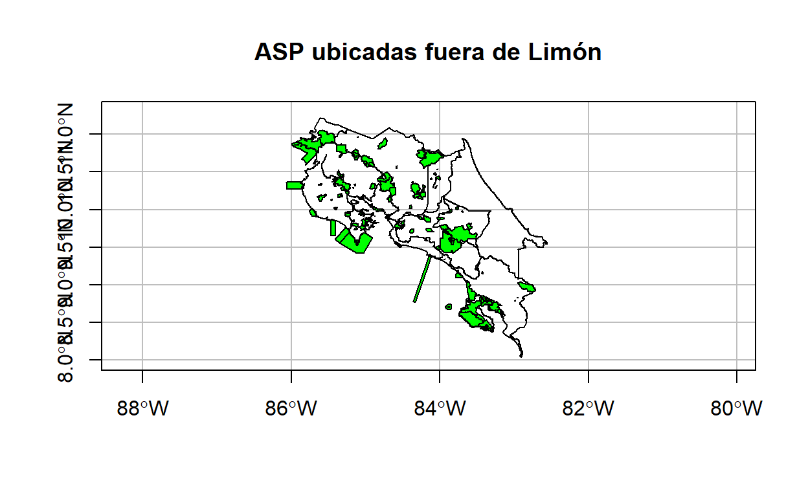
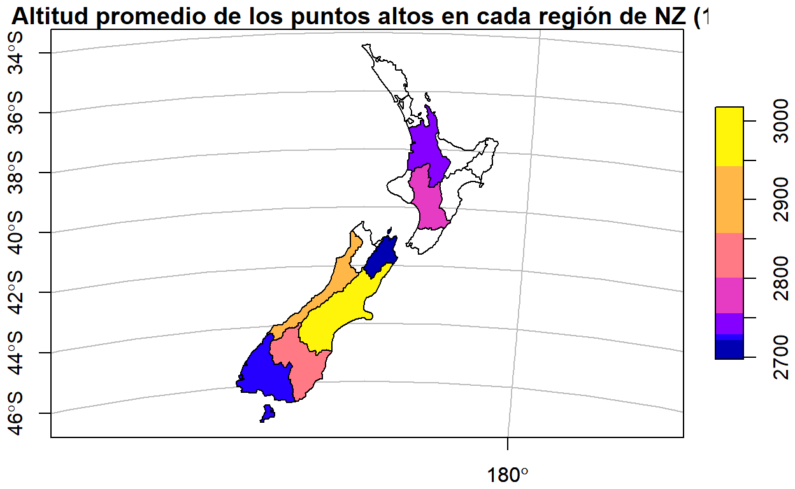
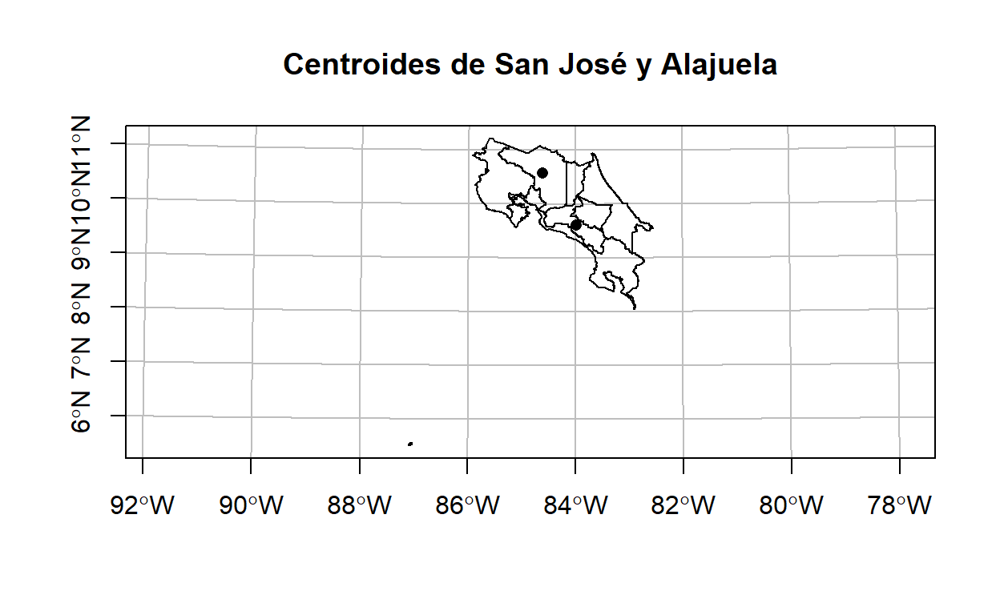

# Carga de la capa de provincias
provincias <-
st_read(
"https://raw.githubusercontent.com/gf0604-procesamientodatosgeograficos/2021i-datos/main/ign/delimitacion-territorial-administrativa/cr_provincias_simp_wgs84.geojson",
quiet = TRUE
)
# Mapa de la capa de provincias
plot(
provincias$geometry,
extent = extent(-86,-82.3, 8, 11.3),
main = "Provincias de Costa Rica",
axes = TRUE,
graticule = TRUE
)

# Carga de la capa de cantones
cantones <-
st_read(
"https://raw.githubusercontent.com/gf0604-procesamientodatosgeograficos/2021i-datos/main/ign/delimitacion-territorial-administrativa/cr_cantones_simp_wgs84.geojson",
quiet = TRUE
)
# Mapa de la capa de cantones
plot(
cantones$geometry,
extent = extent(-86,-82.3, 8, 11.3),
main = "Cantones de Costa Rica",
axes = TRUE,
graticule = TRUE
)

# Carga de la capa de ASP
asp <-
st_read(
"https://raw.githubusercontent.com/gf0604-procesamientodatosgeograficos/2021i-datos/main/sinac/asp/asp-wgs84.geojson",
quiet = TRUE
)
# Mapa de la capa de ASP
plot(
asp$geometry,
extent = extent(-86,-82.3, 8, 11.3),
main = "Áreas silvestres protegidas (ASP) de Costa Rica",
axes = TRUE,
graticule = TRUE
)

# Carga de la capa de aeródromos
aerodromos <-
st_read(
"https://raw.githubusercontent.com/gf0604-procesamientodatosgeograficos/2021i-datos/main/ign/aerodromos/aerodromos-wgs84.geojson",
quiet = TRUE
)
# Mapa de la capa de aeródromos
plot(
aerodromos$geometry,
extent = extent(-86,-82.3, 8, 11.3),
main = "Aeródromos de Costa Rica",
axes = TRUE,
graticule = TRUE
)

# Carga de la capa de vipéridos
viperidos <-
st_read(
"https://raw.githubusercontent.com/gf0604-procesamientodatosgeograficos/2021i-datos/main/gbif/viperidae-cr-registros.csv",
options = c(
"X_POSSIBLE_NAMES=decimalLongitude",
"Y_POSSIBLE_NAMES=decimalLatitude"
),
quiet = TRUE
)
# Asignación del sistema de coordenadas
st_crs(viperidos) = 4326
# Mapa de la capa de vipéridos
plot(
viperidos$geometry,
pch = 16,
extent = extent(-86,-82.3, 8, 11.3),
main = "Registros de Viperidae (tobobas) en Costa Rica",
col = "green",
axes = TRUE,
graticule = TRUE
)

Esta lección brinda una visión general de las operaciones espaciales en datos vectoriales implementadas en el paquete sf y en datos raster implementadas en el paquete raster.
Las operaciones espaciales en datos vectoriales incluyen:
Es el proceso de selección de objetos espaciales con base en su relación con otros objetos espaciales. Estas relaciones se expresan como predicados espaciales, los cuales están implementados como métodos de sf.
La creación de subconjuntos espaciales es análoga a la creación de subconjuntos por datos de atributos. Puede realizarse a través de los operadores [ y $ del paquete base de R o por medio de la función filter() de dplyr.
En los dos ejemplos siguientes, se utiliza el método st_within() para filtrar los puntos contenidos en un polígono. Primero, se utilizan los operadores del paquete base.
# Selección de la provincia de Limón (por atributos)
limon <- provincias[provincias$provincia == "Limón", ]
# Selección de los aeródromos ubicados en Limón (espacial)
aerodromos_limon <- aerodromos[limon, , op = st_within]
# Mapa de aeródromos
plot(
limon$geometry,
main = "Aeródromos de Limón (1)",
axes = TRUE,
graticule = TRUE,
reset = FALSE
)
plot(aerodromos_limon$geometry, pch=16, add = TRUE)

El mismo resultado se obtiene con las funciones y operadores de Tidyverse.
# Selección de la provincia de Limón (por atributos)
limon <-
provincias %>%
filter(provincia == "Limón")
# Selección de los aeródromos ubicados en Limón (espacial)
aerodromos_limon <-
aerodromos %>%
filter(st_within(x = ., y = limon, sparse = FALSE))
# Mapa de aeródromos
plot(
limon$geometry,
main = "Aeródromos de Limón (2)",
axes = TRUE,
graticule = TRUE,
reset = FALSE
)
plot(aerodromos_limon$geometry, pch = 16, add = TRUE)
En el anterior llamado a filter(), la expresión x = . es equivalente a x = aerodromos. Para una explicación sobre el argumento sparse, por favor lea la sección 4.2.2. del libro “Geocomputation with R” de R. Lovelace et. al..
Además de st_within(), sf implementa predicados espaciales como, entre otros, st_contains(), st_intersects() y st_disjoint(), los cuales se ejemplifican en el siguiente bloque de código.
## Ejemplo de st_contains: ASP contenidas en Limón
# Selección de las ASP contenidas en Limón
asp_limon <-
asp %>%
filter(st_contains(x = limon, y = ., sparse = FALSE))
# Mapa de ASP contenidas en Limón
plot(
limon$geometry,
main = "ASP contenidas en Limón",
axes = TRUE,
graticule = TRUE,
reset = FALSE
)
plot(asp_limon$geometry, col = "green", add = TRUE)
## Ejemplo de st_intersects: ASP intersecadas con Limón
# Selección de las ASP intersecadas con Limón
asp_limon <-
asp %>%
filter(st_intersects(x = limon, y = ., sparse = FALSE))
# Mapa de ASP intersecadas con Limón
plot(
limon$geometry,
main = "ASP intersecadas con Limón",
axes = TRUE,
graticule = TRUE,
reset = FALSE
)
plot(asp_limon$geometry, col = "green", add = TRUE)
## Ejemplo de st_disjoint: ASP ubicadas fuera de Limón
# Selección de las ASP ubicadas fuera de Limón
asp_fuera_limon <-
asp %>%
filter(st_disjoint(x = limon, y = ., sparse = FALSE))
# Mapa de ASP ubicadas fuera de Limón
plot(
provincias$geometry,
extent = extent(-86,-82.3, 8, 11.3),
main = "ASP ubicadas fuera de Limón",
axes = TRUE,
graticule = TRUE,
reset = FALSE
)
plot(asp_fuera_limon$geometry, col = "green", add = TRUE)

El cruce “no espacial” de dos conjuntos de datos se basa en uno o varios campos (llamados llaves o keys) que están presentes en ambos conjuntos. Los cruces espaciales se basan en un principio similar pero, en lugar de campos comunes, la relación entre los conjuntos se realiza a través de una operación topológica, a veces llamada spatial overlay. Al igual que con los datos de atributos, el cruce espacial, ejecutado con el método st_join(), agrega una o varias columnas al conjunto de datos destino (i.e. el argumento x de la función), provenientes del objeto fuente (i.e. el argumento y).
En el siguiente ejemplo, se cruzan los registros de presencia de una especie (geometrías de puntos) con la capa de cantones (geomtrías de polígonos), para agregar la columna de nombre del cantón al conjunto de registros de presencia.
# Filtrado de los registros de serpientes de terciopelo (Bothrops asper) en el conjunto de vipéridos
terciopelos <-
viperidos %>%
filter(species == "Bothrops asper")
# Mapeo de la capa de terciopelos
plot(
terciopelos$geometry,
pch = 16,
main = "Registros de terciopelos (Bothrops asper) en Costa Rica",
col = "green",
axes = TRUE,
graticule = TRUE
)
# Cruce espacial con la tabla de cantones, para obtener el nombre del cantón
terciopelos <-
terciopelos %>%
st_join(cantones["canton"])
# Despliegue de los datos cruzados
terciopelos %>%
st_drop_geometry() %>%
slice(1:10) %>%
select(stateProvince, canton, locality)
stateProvince canton locality
1 Puntarenas <NA>
2 Limón Talamanca
3 Alajuela Upala
4 Limón Siquirres
5 Heredia Sarapiquí
6 Puntarenas Osa
7 Heredia Sarapiquí
8 Heredia Sarapiquí
9 Guanacaste Liberia
10 Alajuela Upala La función st_join() realiza por defecto un left join, pero puede realizar cruces de otros tipos también. Por ejemplo, con el argumento left = FALSE, puede realizarse un inner join. También por defecto, la operación topológica que se aplica es st_intersects().
De manera similar al caso de la agregación de atributos, la agregación espacial es una forma de “condensar” o “resumir” datos. Los datos agregados muestran estadísticas de una variable (ej. promedio, suma) en relación con una variable de agrupación. Esto puede lograrse con el método agregate() de sf o con los métodos group_by() y summarize() de dplyr, utilizados en combinación con st_join().
En el siguiente bloque de código, se utiliza summarize() para mostrar el promedio de altitud de los puntos más altos de Nueva Zelanda en cada región del país. Los datos de los puntos más altos están en el objeto nz_height y los de las regiones de Nueva Zelanda en el objeto nz.
# Promedio de altitud de puntos más altos para cada región de NZ
nz_altitud_promedio_x_region <-
nz_height %>%
aggregate(by = nz, FUN = mean)
# Mapa de altitud promedio en regiones
plot(
nz_altitud_promedio_x_region["elevation"],
main = "Altitud promedio de los puntos altos en cada región de NZ (1)",
axes = TRUE,
graticule = TRUE
)

El siguiente bloque de código logra el mismo resultado, con los métodos de dplyr.
nz_altitud_promedio_x_region <-
nz %>%
st_join(nz_height) %>%
group_by(Name) %>%
summarize(elevation = mean(elevation))
# Mapa de altitud promedio en regiones
plot(
nz_altitud_promedio_x_region["elevation"],
main = "Altitud promedio de los puntos altos en cada región de NZ (2)",
axes = TRUE,
graticule = TRUE
)
La distancia entre dos objetos sf se calcula con el método st_distance(). Debe utilizarse un sistema espacial de referencia (SRS, CRS) con unidades apropiadas para la medición (ej. metros).
En el siguiente ejemplo, se calcula la distancia entre puntos correspondientes a los centroides de dos provincias. Antes, con el método st_transform(), la capa de provincias se transforma al CRS CRTM05, que utiliza metros como unidad de medición.
# Transformación de la capa de provincias al CRS CRTM05 (EPSG = 5367)
provincias_crtm05 <-
provincias %>%
st_transform(5367)
# Centroide de la provincia de San José
centroide_sanjose <-
provincias_crtm05 %>%
filter(provincia == "San José") %>%
st_centroid()
# Centroide la provincia de Alajuela
centroide_alajuela <-
provincias_crtm05 %>%
filter(provincia == "Alajuela") %>%
st_centroid()
# Distancia entre los centroides de San José y Alajuela
st_distance(centroide_sanjose, centroide_alajuela)
Units: [m]
[,1]
[1,] 126235.1# Mapa de los centroides
plot(
provincias_crtm05$geometry,
main = "Centroides de San José y Alajuela",
axes = TRUE,
graticule = TRUE,
reset = FALSE
)
plot(centroide_sanjose$geometry, pch = 16, add = TRUE)
plot(centroide_alajuela$geometry, pch = 16, add = TRUE)

Se presentan diversas visualizaciones de los registros de presencia de la serpiente terciopelo (Bothrops asper) en Costa Rica, de acuerdo con los datos obtenidos a través de una consulta al portal de la Infraestructura Mundial de Información en Biodiversidad (GBIF).
# Tabla de datos de registros de presencia
terciopelos %>%
st_drop_geometry() %>%
select(stateProvince,
canton,
locality,
year
) %>%
DT::datatable(
colnames = c("Provincia", "Cantón", "Localidad", "Año"),
rownames = FALSE,
options = list(
searchHighlight = TRUE
)
)
# Gráfico de registros de presencia por mes
terciopelos %>%
st_drop_geometry() %>%
group_by(mes = format(as.Date(eventDate, "%Y-%m-%d"), "%m")) %>%
summarize(suma_registros = n()) %>%
filter(!is.na(mes)) %>%
plot_ly(x = ~ mes,
y = ~ suma_registros) %>%
layout(title = "Registros de terciopelos (Bothrops asper) por mes",
xaxis = list(title = "Mes"),
yaxis = list(title = "Cantidad de registros"))
# Mapa de registros de presencia
terciopelos %>%
select(stateProvince,
canton,
locality,
eventDate) %>%
leaflet() %>%
addProviderTiles(providers$OpenStreetMap.Mapnik, group = "OpenStreetMap") %>%
addProviderTiles(providers$Stamen.TonerLite, group = "Stamen Toner Lite") %>%
addProviderTiles(providers$Esri.WorldImagery, group = "Imágenes de ESRI") %>%
addCircleMarkers(
stroke = F,
radius = 4,
fillColor = 'green',
fillOpacity = 1,
popup = paste(
terciopelos$stateProvince,
terciopelos$canton,
terciopelos$locality,
terciopelos$eventDate,
sep = '<br/>'
),
group = "Terciopelos (Bothrops asper)"
) %>%
addLayersControl(
baseGroups = c("OpenStreetMap", "Stamen Toner Lite", "Imágenes de ESRI"),
overlayGroups = c("Terciopelos (Bothrops asper)")
) %>%
addMiniMap(
tiles = providers$Stamen.OpenStreetMap.Mapnik,
position = "bottomleft",
toggleDisplay = TRUE
)
Utilizando R Markdown, genere un documento HTML para visualizar datos sobre el junco de los páramos (Junco vulcani) y publíquelo como un sitio web en GitHub Pages. Puede encontrar registros de presencia de la especie en el repositorio de datos del curso. Estos registros fueron obtenidos a través de una consulta al portal de la Infraestructura Mundial de Información en Biodiversidad (GBIF).
El sitio web debe contener visualizaciones en forma de:
If you see mistakes or want to suggest changes, please create an issue on the source repository.
Text and figures are licensed under Creative Commons Attribution CC BY-SA 4.0. Source code is available at https://github.com/gf0604-procesamientodatosgeograficos/2021i-leccion-15/, unless otherwise noted. The figures that have been reused from other sources don't fall under this license and can be recognized by a note in their caption: "Figure from ...".